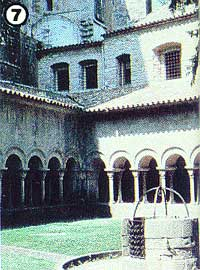

Backpacking Spain's Costa Brava
A report from a couple who beat the dollar crunch and still had a fine European vacation, including coastal camping, content in Colera, southern explorations.
By Abbie Loomis and Frank Court
March/April 1981
Here's a report from a couple who beat the dollar crunch and still had a fine European vacation...
In spite of inflation and the poor exchange rate abroad, our recent five-week backpacking trip to the northern Mediterranean's Costa Brava (the "rugged coast") cost us only $50 a week, including train travel, camping fees, and-our most expensive item-food!
A CHANGE OF PLANS
The grim reality of the U.S. dollar's weakening hit us as soon as we arrived in Luxembourg last June. Food, even when we prepared it ourselves, was especially high-priced, and train travel-once a particularly inexpensive means of transportation-called for major outlays of cash.
So, after one week of unplanned-for expense and disappointment, we abandoned our original plan (to backpack in the Swiss Alps) and headed for Spain's Costa Brava, a mountainous coastal region that extends from the northern border towns of Cerbere and Port Bou to Blanes, which is 175 kilometers to the south. The entire area is dotted by a string of relatively small resort and fishing villages, usually linked by railroads and a limited bus service.
While riding the train from Geneva to Port Bou, we drew up a rough itinerary, relying upon brochures and maps we'd obtained (free) from the Spanish National Tourist Office (Dept. TMEN, 665 Fifth Avenue, New York, New York 10022).
We noticed that, curiously enough, there were no camping spots anywhere back in the mountains. Later, we learned that access to the Pyrenees in that part of the country is limited-and, at times, prohibited-by Spanish law, so pitching a tent on undesignated ground will occasionally invite arrest and legal action. (Spanish authorities are particularly adamant about this point.)
At 6:00 a.m., after a 12-hour trip, we arrived in Port Bou and boarded a transvia, the special low-cost Spanish train. It soon became apparent that inexpensive rail travel in Spain requires an adventurous spirit, great patience, and a willingness to keep asking questions and getting nowhere. Above all, the traveler must be favorably disposed to walking if all else fails (which it often does).
CONTENT IN COLERA
After a short ride, we got off at a dilapidated hilltop train station, where a sign proclaimed (with characteristic rural Spanish candor), "Colera ... a place of small importance". It was a qualification that we would come to disagree with completely by the time we left the quiet, lovely seaside village.
The campground on the edge of the town was made up of a series of small fields, peppered here and there by pine and olive trees. The camping fee was only $2.00 a day for both of us, and the facilities-like those we found all along the coast-were simple, but adequate.
There were numerous outdoor (and a few indoor) showers and blue-tiled cold-water sinks ... a small camping store, where a frequent lack of change resulted in many amiable IOU's on both sides of the counter ... and a tiny bar and restaurant (the cook/bartender's geniality and musical inclinations increased-and his linguistic and culinary abilities decreased -as the day wore on and the contents of the vino tinto bottle behind the counter dwindled).
We set up our tent against a windbreak of pines, a site which-we later realized-had been a fortunate choice ... since, along that part of the coast, nightly winds roar down from the mountains, pulling up stakes and once even bending our tent poles. (We recommend taking along sturdy steel tent stakes that can survive being pounded into the rocky, sunbaked ground, and can also withstand the tugs of the airy blasts! )
A LOVELY ROUTINE
The next day, we began a routine that we were to follow for the next few weeks. After a breakfast of coffee and rolls, we spent the morning doing laundry and other chores. By 11:00 a.m., when the sun had warmed the air, it was time for us to explore. A ten-minute walk through the village brought us to a small, pebbled cove surrounded by gray cliffs. Although the air was warm, we found the sea still too cold for swimming, so we spent most of our time in the shallows, collecting shells and colored pebbles.
Cold water notwithstanding ... at certain times of the day village women would come to the beach, take off their shoes and stockings, roll up their dark gray skirts, and cautiously wade out to large submerged slabs of algae-covered rocks to gather some of the plentiful mussels. We soon followed their lead and added welcome variety to our food supply.
By 2:00 p.m. the sun was usually so hot that we'd seek shelter and eat lunch, which often consisted of bocadillos con queso (two large slices of bread surrounding a thick slab of cheese) and a bottle of cerveza (beer) or fruit juice. While water at the campground was labeled potable, our caution got the better of us, and we stuck with safer alternatives, occasionally buying bottled water.
Because we didn't pack any cooking gear (we will next time ... probably a small, one-burner stove), we pretty much lived on cheese and a dish that we called "Spanish Salad". To make the staple, we mixed a can of tuna (or an equal amount of any of the other plentiful varieties of seafood) with several chopped tomatoes, some Spanish onions, and the juice of two fresh lemons. The salad was frequently accompanied by locally grown black olives, fresh bread, and a (shared) liter of local red wine ... and-even with the beverage-such a repast cost less than $3.00!
COASTAL CAMPING
We were so taken with the rugged coastline around Calera that we spent the remainder of the week hiking from cove to cove, exploring the tidal pools and wading-when the tide was out-to small, offshore boulder-pile islands. Occasionally, we met a lone bather or hiker, but for the most part we were undisturbed in our own private sea world ... a minor miracle, we decided, in mid-June when the Mediterranean tourist season-in other areas-was about to peak.
Following a week in Colera, we departed for Garbet-the next village along the coast-which consisted of several old houses, a combination bar and restaurant, and a beach-front campground. It was an easy hike that took about three hours ... and, thanks to the ocean's breezes, we didn't get uncomfortably hot even in the afternoon (although we did wear head coverings, as a sensible precaution against the sun).
In Garbet, a resident told us about a deserted town up in the mountains called Los Molinos ... where a lone goatherd sold milk and cheese. Even though we couldn't camp there- and it meant backtracking to Colera-we found the lure of this abandoned hamlet (and its homegrown dairy products) irresistible.
A hike of about two hours brought us to the village. All but one of the old, mortared stone houses were in ruins, and a small boy watched us timidly from that structure's doorway. His father-a short, stocky man with a very friendly smile-was heading down the potholed path to a low, stone building fronted by a wooden enclosure. Inside the small barn about 50 midnight black goats with unblinking, golden-flecked eyes fixed their almost supernatural stares on us. The man motioned for us to sit on a wall and opened the gate. Immediately, the road was filled with a swirl of bleating animals, heading for pasture.
Purchasing some cheese for several pesetas, we wished the isolated inhabitants well and returned to Colera. That day's trip into the mountains proved to be one of the most quietly pleasant experiences of our entire vacation.
SOUTHERN EXPLORATIONS
After leaving Los Molinos, we decided to "rest" from our coastal hiking for a while, and take the train to some of the towns farther south. We made four trips in as many days, returning to our Colera base camp each evening.
One such jaunt (which turned out to be a mistake) was a visit to Rosas, a popular resort with sandy beaches bordered by high-rise hotels and apartments and featuring equally high prices as well as an overcrowded, tourist-dominated population and culture.
On the other hand, our journey to Perelada-a little medieval village that's about one hour by train from Colera followed by a 20-minute walk from the nearest railroad station-was extremely satisfying. The town is known as Spain's champagne center, and the wine cellars were worth the visit. But the biggest appeal was the village itself, with its sixteenth-century church, its ancient walls, and its old houses built over older groundfloor stone rooms that still, in many instances, serve as barns.
Another fine excursion took us to Gerona, where the Gothic quarter-which winds along the Oñar River-is a miniature Spanish version of Venice or Amsterdam. The only sources of light in its maze of narrow alleys are small patches of sky by day, and antique lanterns by night.
When we returned to our base camp, we took a 20-minute train ride to the town of Llansa. From there, we set off on foot for Port de la Selva, a village about seven miles down the coast. There we found a large, well-equipped campground, bordering the ocean about half a mile out of town ... the most scenic camping spot we visited during our entire stay in Spain. Behind it, high in the distant mountains, we could glimpse the outline of an impressive old monastery called San Pedro de Rods, and decided to investigate it.
So early the next morning, we loaded some supplies in ourday packs and started the climb that black-robed monks must have made quite often in the distant past. The first stretch of the hike was pretty easy going, and brought us to Val, a tiny mountain village. But beyond that settlement's black stone paths and ancient houses still shuttered against the morning sun, the trail wound steeply back and forth across the imposing face of the mountain.
After about three hours of strenuous climbing, we found ourselves directly beneath the massive monastery. And when we finally reached the entranceway, we passed directly through a tiered courtyard into a cathedral built within the monastery's interior. Gigantic columns and a vaulted ceiling swept upward. but at ground level-except for a few graceful marble carvings at the base of the pillars-there remained only dusty piles of stone rubble and gaping holes that had once been monks' tombs.
We left late that afternoon and made the long descent to camp. After resting a day, we backpacked to the village of Cadaques, where we stayed almost a week ... enjoying the coastline, the surrounding mountains, and the town (though we didn't see the artist, Salvador Dali, who lives there).
FUTURE PLANS
Even before we left Spain, we were plotting an itinerary for a return trip. (After all, where else in Europe can anyone move so easily from campground to campground, and live comfortably while spending less than $50 a week!)
We agreed that the best route would take us from the village world of Criers (where we'll spend less time) over the mountains to the beach camp at Garbet... from Garbet to Llansa by foot or train ... and then down the coastal road by foot to the beach camp at Port de la Selva and to San Pedro high in the mountains. From there, we'd travel again to Cadaques and to other villages south along the coast, making sure-at some point-to camp within a reasonable distance of Gerona. We won't pass up the experience of seeing that town's Gothic quarter lit up at night by ancient gas lanterns arched over the stepped, cobblestone streets next time ... and we're sure that there will be a next time!
EDITOR'S NOTE: If you can't take the time to backpack the Costa Brava, you might want to join MOTHER's Solar Tour to France, which will cover the French portion of this wild, impressive coastline and take you deep into the rugged, majestic Pyrenees. See page 86 for details.
 PHOTOS BY THE AUTHORS [1] Vineyards and olive groves dot the Costa Brava coastline. [2] Black, golden-eyed goats are among the few residents of Los Molinos. |
Perelada remains much the way it was 500 year ago |
Monkey tress spread their shade over village squares |
|
Hedgerows protected our tent from gusty winds |
The little train station at Colera, our first stop |
 A cloister in Gerona's ancient cathedral |